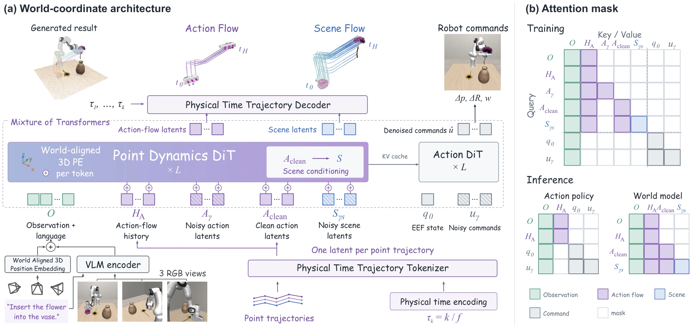

From instruction to action.
Generate task-conditioned gripper motion and executable robot commands. Direct control can skip flow generation when only actions are needed.
Drag to orbit. Scroll to zoom.
Play the prediction, or move through time.
Choose an interaction above.
Loading 3D trajectories…
Lifting. Inserting. Opening. Releasing.
Watch predicted scene responses across simulation and real-world interactions.
Generate task-conditioned gripper motion and executable robot commands. Direct control can skip flow generation when only actions are needed.
Condition on a gripper trajectory and predict how queried scene points move over the same physical interval. On this page, the conditioning trajectory is generated by the policy from the same observation and instruction.

Metric groundingWorld-aligned 3D positional embeddings ground visual tokens in a shared physical frame.
Physical timeA trajectory tokenizer encodes each point trajectory as one token, anchored at its current 3D position.
Coupled expertsA point dynamics expert models action and scene flow, while an action expert generates robot commands.
LIBERO
Average successLIBERO-Plus
Overall successRoboTwin Randomized
Success rateVLABench
Success rate| Method | Params (B) | LIBERO Avg. | LIBERO-Plus | RoboTwin Clean | RoboTwin Rand. | VLABench SR | VLABench PS | VLABench IS |
|---|---|---|---|---|---|---|---|---|
| VLA Policies | ||||||||
| X-VLA | 1.0 | 98.1 | 71.4 | 72.88 | 72.84 | 29.4 | 51.2 | 70.2 |
| VLA-JEPA | 2.0 | 97.2 | 77.9 | — | — | — | — | — |
| π₀ | 3.0 | 94.15 | 53.6 | 65.92 | 58.40 | 29.4 | 44.1 | 55.0 |
| π₀.₅ | 3.0 | 96.9 | 85.7 | 82.74 | 76.76 | 48.1 | 62.3 | 64.9 |
| ABot-M0 | 4.0 | 98.6 | 80.5 | 80.42 | 81.16 | — | — | — |
| Video-Based WAMs | ||||||||
| Cosmos Policy | 2.0 | 98.5 | 82.2 | — | — | — | — | — |
| GE-Act | 2.2 | 96.5 | 80.3 | — | — | — | — | — |
| LingBot-VA | 5.3 | 98.5 | 69.5 | 92.93 | 91.55 | — | — | — |
| Fast-WAM | 6.0 | 97.6 | 51.5 | 91.88 | 91.78 | — | — | — |
| Motus | 8.0 | 97.7 | — | 88.66 | 87.02 | — | — | — |
| 3D-Aware Policies | ||||||||
| SpatialVLA | 3.5 | 78.1 | — | — | — | — | — | — |
| LaMP | 5.0 | 98.3 | 79.3 | — | — | — | — | — |
| X-WAM | 6.7 | — | — | 89.8 | 90.7 | — | — | — |
| Dex-BEV | — | 97.8 | — | 76.0 | 42.0 | — | — | — |
| UNITAS | ||||||||
| UNITAS (w/o Pretrain) | 1.7 | 99.5 | 86.5 | 91.08 | 90.74 | 50.3 | 64.3 | 71.2 |
| UNITAS | 1.7 | 99.8 | 89.1 | 92.94 | 93.04 | 56.2 | 67.6 | 69.3 |